Texas International Pop Festival closes on Labor Day
Led Zeppelin, Janis Joplin, Santana, Sly and the Family Stone, and B.B. King closed out the three-day festival at the former Dallas International Motor Speedway in Lewisville, Texas.
It stands as one of 1969's biggest and least remembered festivals, drawing a lineup nearly as stacked as Woodstock two weeks earlier.
Texas International Pop Festival closes in Lewisville
The three-day festival at the former Dallas International Motor Speedway wrapped its Labor Day finale with sets from Led Zeppelin, Janis Joplin, Santana, Sly and the Family Stone, and B.B. King, per the Texas State Historical Association.
The lineup rivaled Woodstock's two weeks earlier, yet the festival never earned the same place in popular memory.
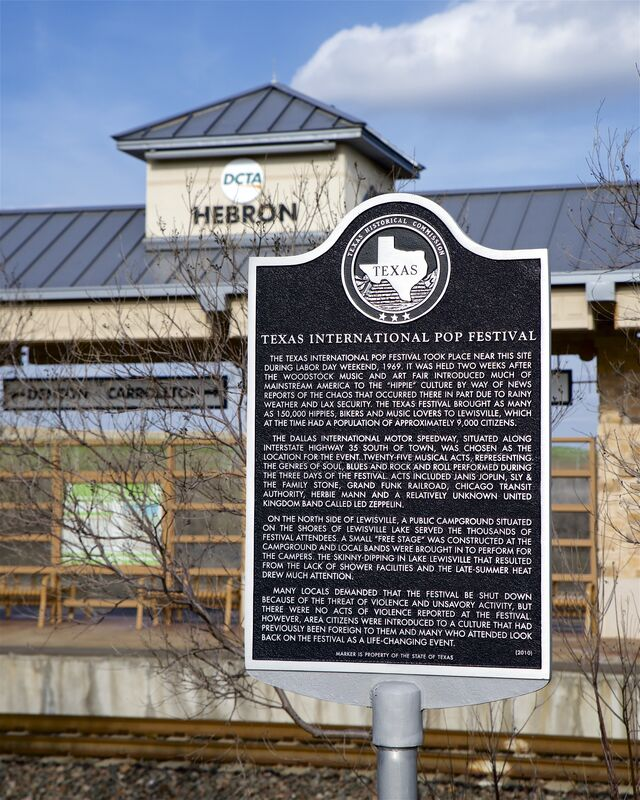
New Orleans Pop Festival wraps its three-day run
The festival at the Pelican State Speedway in Prairieville, Louisiana, closed out its Labor Day weekend with Janis Joplin, the Grateful Dead, Santana, and The Byrds on the bill.
It was one of three major Labor Day festivals running that same weekend, a sign of how fast the outdoor rock festival had become standard summer programming by 1969.
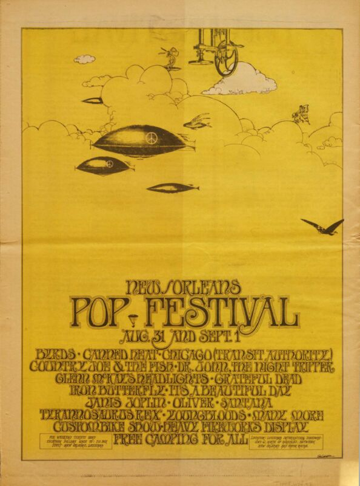
Sky River Rock Festival closes its second year in Tenino
The second annual Sky River Rock Festival and Lighter Than Air Fair wrapped its Labor Day run in Tenino, Washington.
It was one of the earliest multi-day outdoor counterculture rock festivals in the Pacific Northwest, predating the region's later festival boom.
Jimi Hendrix Experience electrifies Red Rocks
The Jimi Hendrix Experience headlined the Colorado amphitheater with Vanilla Fudge, Soft Machine, and Eire Apparent opening, a show originally misprinted for the following night, per setlist.fm.
It remains one of the era's loudest and most celebrated outdoor bills at a venue still considered one of rock's great stages.
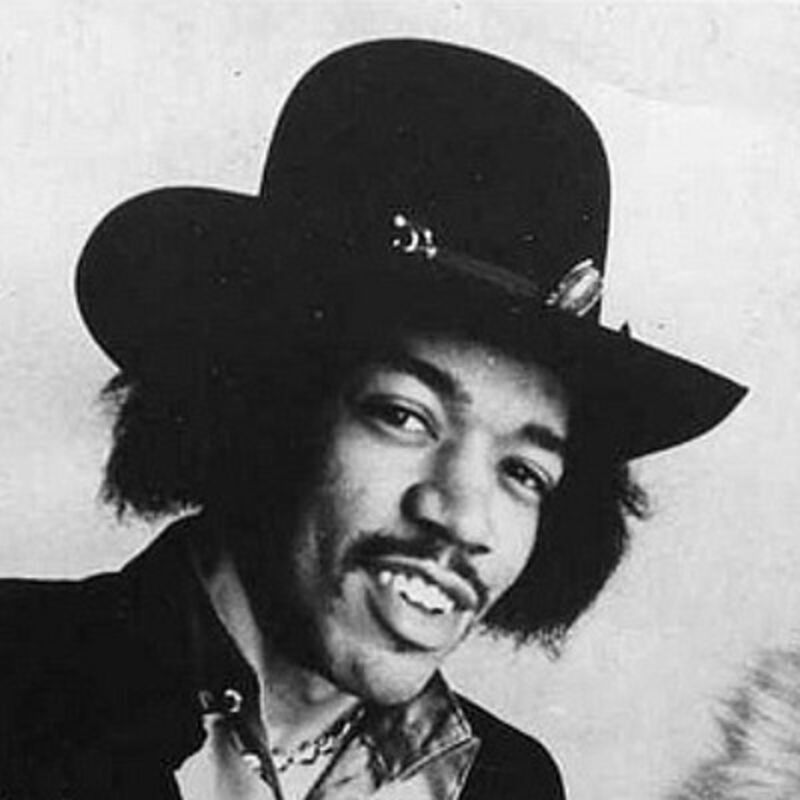
The Beatles meet to plan their future without Brian Epstein
Paul McCartney convened the other three Beatles at his London home five days after manager Brian Epstein's death, where the band postponed a planned trip to India and greenlit the self-directed Magical Mystery Tour project, per The Paul McCartney Project.
The meeting marked the moment The Beatles took direct control of their own business affairs for the first time.
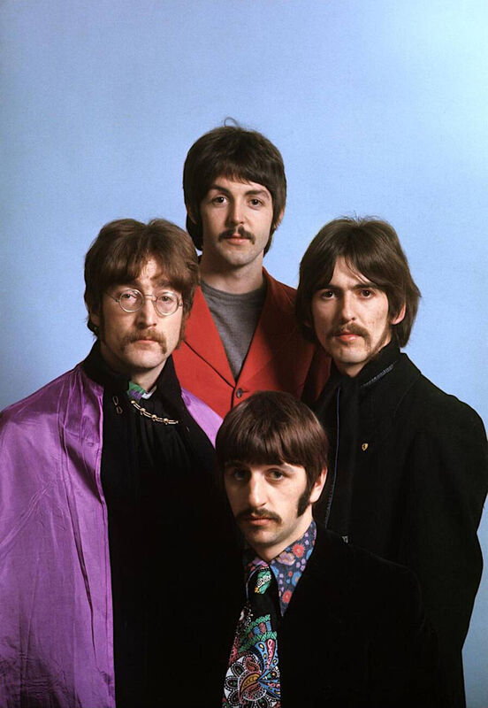
Joni Mitchell registers copyright on A Melody In Your Name
Joni Mitchell filed the publishing copyright for her song under her own Gandalf Publishing Company, per the JoniMitchell.com archive, a small administrative step just ahead of her breakthrough as a major voice of the folk movement.
The registration is a rare paper trail into how early she was already managing her own catalog as a songwriter.
The Byrds open an 11-night Whisky a Go Go residency
The folk-rock pioneers began the first night of a headlining run at the Whisky a Go Go on the Sunset Strip in West Hollywood, per setlist.fm.
The residency landed during the band's shift into their more psychedelic period, a live proving ground for the new material.
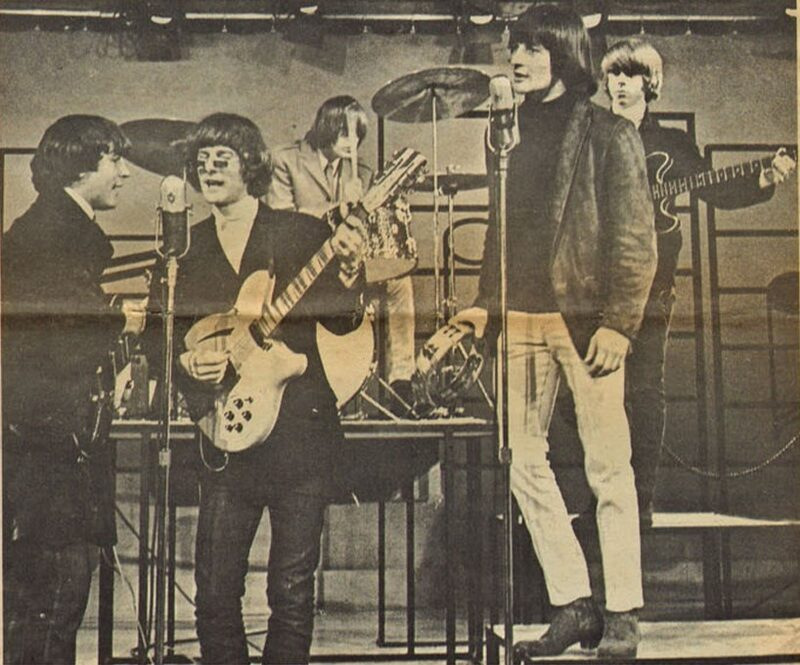
Ariel Rivera is born in Manila
Jose Ariel Jimenez Rivera was born in Manila, Philippines.
He grew up to become a triple-platinum OPM singer, later known as one of the Philippines' most successful balladeers.
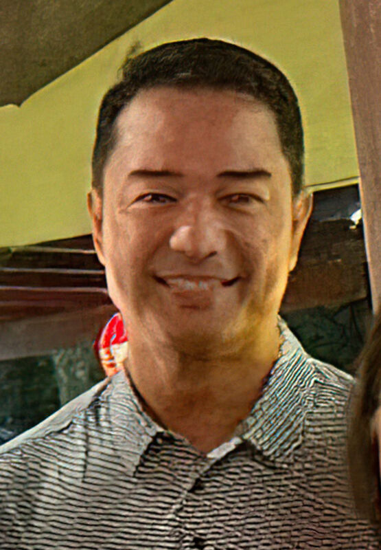
Roger Miller's Return of Roger Miller is certified gold
The RIAA certified Roger Miller's breakthrough album gold, marking the first gold certification of his career.
It confirmed his crossover from novelty-leaning country singles into a bona fide commercial force.
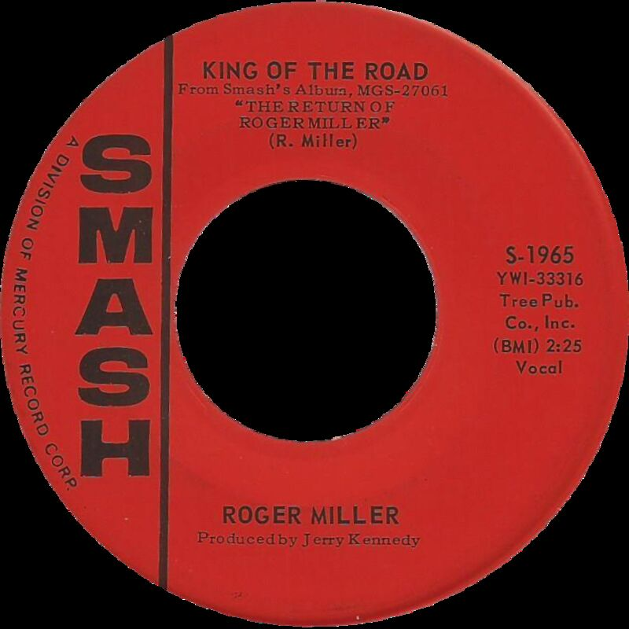
James Brown debuts Papa's Got a Brand New Bag on Shindig!
James Brown performed his funk-soul crossover hit on the ABC teen-music variety show, per Songfacts, showing off the dance moves that defined his live act.
The performance introduced the song's new rhythmic approach to a national television audience for the first time.
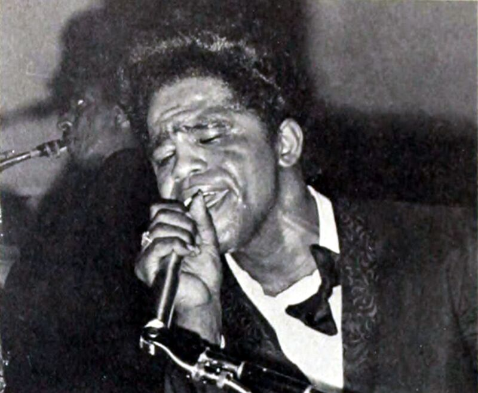
Motown renews its EMI licensing deal in Britain
Motown Records signed a three-year renewal of its international licensing and distribution contract with EMI Records in the UK, per Adam White's Motown Timeline.
The deal laid the groundwork for the dedicated Tamla Motown label that launched in Britain the following year.
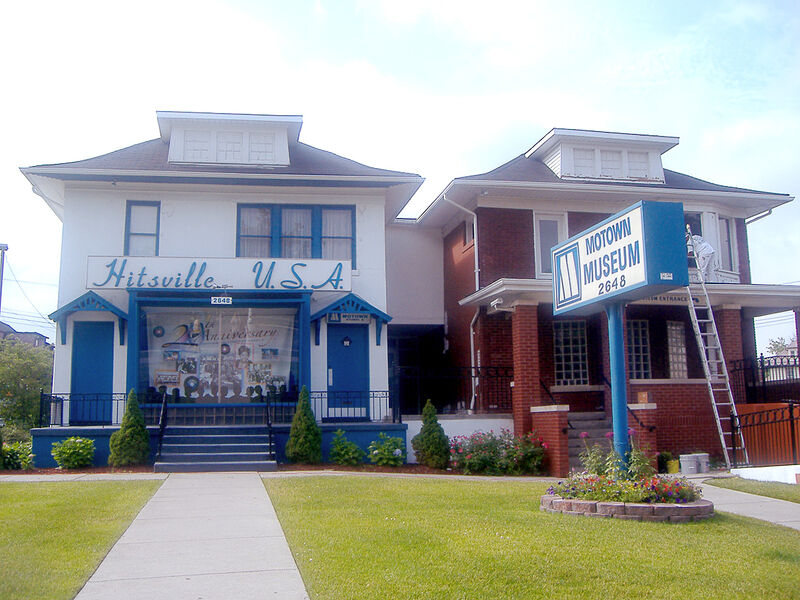
Charlie Robison is born in Houston
Charlie Robison was born in Houston, Texas.
He grew up to become a leading voice of the grittier, raw Texas country movement, later finding mainstream success with I Want You Bad.
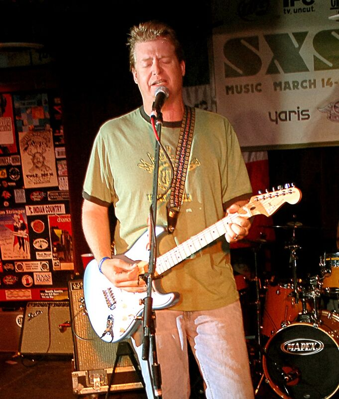
The Beatles tape Big Night Out at Didsbury Studio Centre
The Beatles taped an appearance on ABC Television's variety show Big Night Out in Manchester, miming From Me To You, She Loves You, and Twist and Shout in front of a live studio audience, per The Beatles Bible.
The episode aired across the ITV network less than a week later, part of the wave of TV exposure driving Beatlemania that autumn.
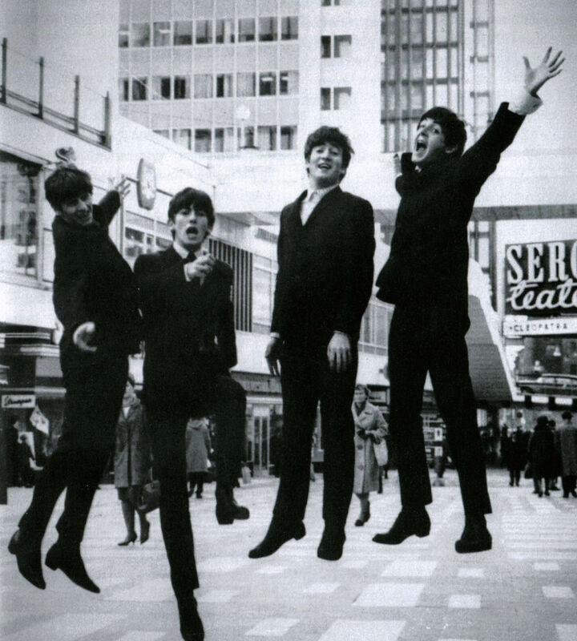
Tommy Roe's Sheila hits No. 1
Tommy Roe scored his first US Billboard Hot 100 number one with Sheila, a self-written track carrying an unmistakable Buddy Holly-style vocal hiccup and Peggy Sue-style drumbeat, per Wikipedia.
It was a re-recording of a song Roe first cut in 1960 with his high school group, The Satins, proof the original arrangement just needed the right studio polish.
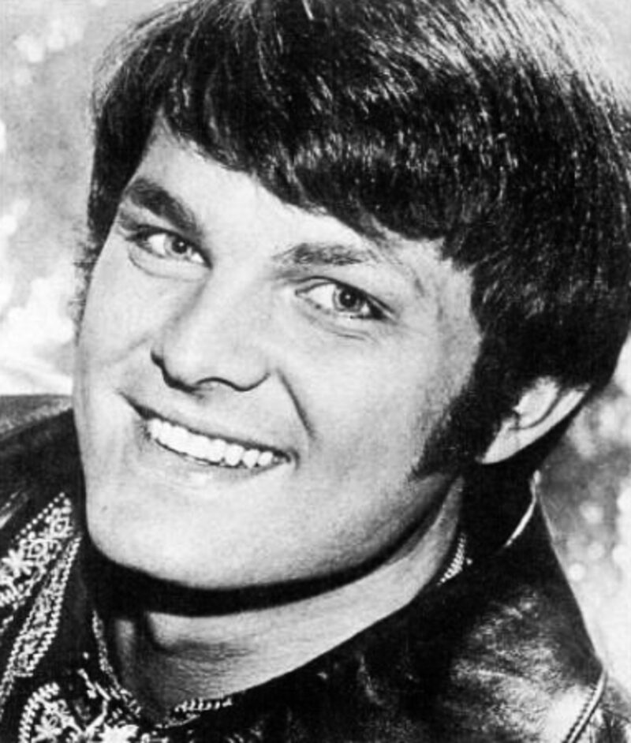
Tony Bennett releases My Heart Sings
Tony Bennett released his studio album My Heart Sings on Columbia Records, recorded at CBS's 30th Street Studio in New York.
The album became a standard-bearer for early-1960s vocal pop, featuring the standout Don't Worry 'Bout Me.
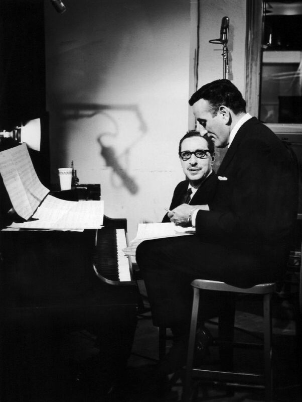
Boney James is born in Lowell, Massachusetts
James Oppenheim, later known as Boney James, was born in Lowell, Massachusetts, per Wikipedia.
He grew up to become a multi-Grammy-nominated smooth jazz saxophonist, songwriter, and producer.
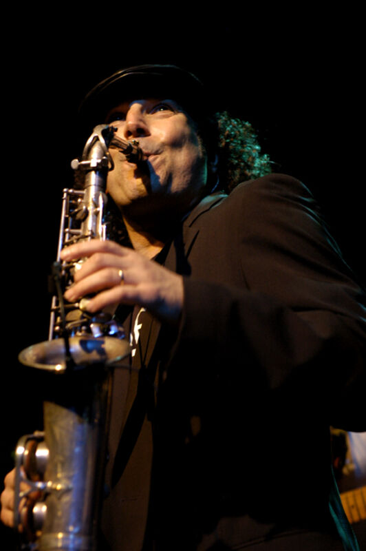
Art Blakey and the Jazz Messengers release their self-titled LP
The hard-bop group released Art Blakey and the Jazz Messengers on Impulse! Records, recorded with the band temporarily expanded to a sextet.
It was pianist Bobby Timmons's final session with the group before he left to rejoin Cannonball Adderley.
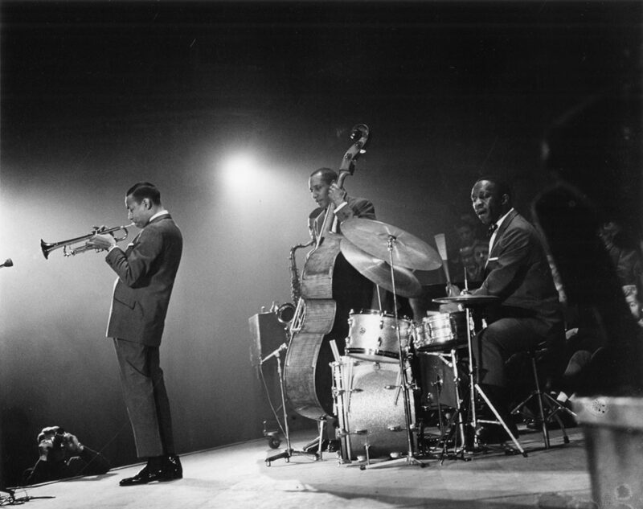
Arabinda Muduli is born in Khanati, Odisha
Arabinda Muduli was born in Khanati, in India's Khordha district, per Wikipedia.
He grew up to become a celebrated Odia bhajan singer and lyricist devoted to spiritual devotional music.
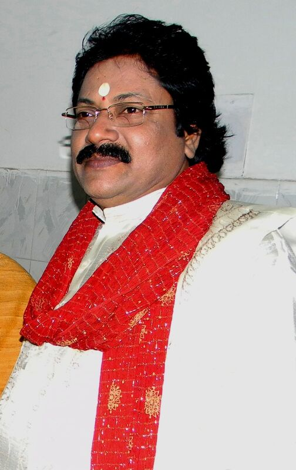
Aunt Molly Jackson dies at 80
Mary Magdalena Garland, known professionally as Aunt Molly Jackson, died at approximately age 80, per Wikipedia.
The Appalachian folk singer and union activist had become one of the defining voices of the coal miners' struggles during the Great Depression.
Broadway and the West End dim their lights for Oscar Hammerstein II
New York's Times Square lights went dark for one minute and London's West End theater lights dimmed in a synchronized transatlantic tribute to lyricist Oscar Hammerstein II, per Wikipedia.
The joint gesture honored his massive contributions to musical theater following his death just over a week earlier.
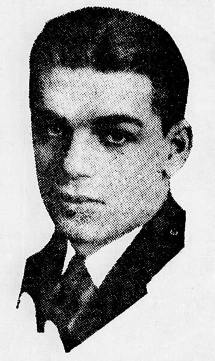
Joseph Williams is born
Joseph Williams, son of film composer John Williams, was born, per Wikipedia.
He grew up to front the rock band Toto in the mid-1980s, singing lead on hits including Pamela.
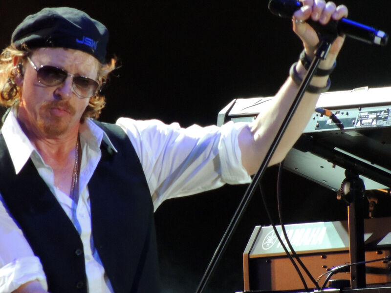
Frequently Asked Questions
What happened in 1960s music on September 1?
September 1 saw 21 verified music events across the decade.
They include three major festival closings in 1969, Tommy Roe's 1962 number-one hit Sheila, two separate Beatles milestones, and five artist births.
What is the biggest 1960s music event on September 1?
The Texas International Pop Festival's Labor Day closing in 1969 stands as the day's biggest event.
Its lineup included Led Zeppelin, Janis Joplin, Santana, Sly and the Family Stone, and B.B. King.
Did The Beatles do anything on September 1?
Yes, twice.
On September 1, 1963, The Beatles taped their Big Night Out television appearance in Manchester, and on September 1, 1967, the band met at Paul McCartney's London home to plan their future five days after manager Brian Epstein's death.
What songs hit number one on September 1 in the 1960s?
Tommy Roe's Sheila reached number one on the US Billboard Hot 100 on September 1, 1962.
It was his first chart-topping single.
Which music festivals happened on September 1, 1969?
Three major festivals closed on the same Labor Day in 1969.
They were the Texas International Pop Festival in Lewisville, the New Orleans Pop Festival in Prairieville, Louisiana, and the Sky River Rock Festival in Tenino, Washington.
Which 1960s musicians were born on September 1?
Toto's Joseph Williams was born September 1, 1960, Odia singer Arabinda Muduli and saxophonist Boney James were both born September 1, 1961, country singer Charlie Robison was born September 1, 1964, and OPM balladeer Ariel Rivera was born September 1, 1966.